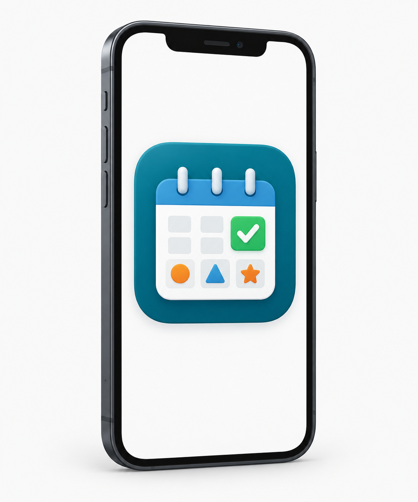

Check for understanding
Place these actions in a useful Agile sequence.
Lesson 8: Putting Agile into Practice
Lesson overview
In this final lesson, you will connect the major Agile and Scrum decisions from the full module. You will guide Student Hub through one changing project scenario, defend decisions with evidence, and explain how the team knows whether its work is truly done.

Student Hub connection
You have helped the Student Hub team move from user needs to backlog work, sprint planning, blockers, review, and improvement.
Now you will connect the full cycle. You will decide what the team should do when several pieces of evidence compete for attention, and you will explain why quality standards matter before a product Increment is complete.
Users need assignment reminders, keyboard users cannot set them, the team has limited capacity, one test account is blocked, and teachers ask for course filters.
Step 8.2 · Learn and check
One Scrum Informed Agile Cycle
Estimated time: 8 minutes
Introduce why Agile supports iterative work, feedback loops, and project change in a short engagement focused format.
LEARN, This Scrum informed cycle shows one way Agile teams connect important decisions across a project. Teams adapt their practices as needs, constraints, and evidence change.
A user need helps the team shape a Product Goal. The Product Owner orders the Product Backlog using value, risk, evidence, and effort.
During Sprint Planning, the Scrum Team creates a Sprint Goal. Developers select work that supports the goal and create a Sprint Backlog.
During the Sprint, Developers inspect progress and adapt their plan. At the Sprint Review, the team and stakeholders inspect the product result. At the Sprint Retrospective, the team chooses one way to improve how it works.
Agile teams still plan. They use repeated planning, working results, and feedback to reduce risk.
Place these actions in a useful Agile sequence.
Step 8.3 · Learn and check
Estimated time: 7 minutes
Review Product Backlog, Sprint Backlog, and Increment before the summative scenario.
Use this toolkit when a software project changes. Product Goal describes the future value the product should create. Product Backlog is the ordered list of possible product work. Sprint Goal states the value or purpose for the current Sprint. Sprint Backlog shows the selected work and the Developers' plan.
Scrum artifacts have commitments. The Product Backlog connects to the Product Goal. The Sprint Backlog connects to the Sprint Goal. The Increment connects to the Definition of Done. These links help the team make work and quality visible.
A usable Increment is completed product work that can provide value. In Scrum, work becomes part of an Increment only when it meets the Definition of Done.
The Definition of Done is the team's shared quality standard. It helps the team avoid calling work complete before testing, access, and other required quality checks are finished.
This matters in the final Student Hub challenge. A reminder feature may look like it works, but it is not done if keyboard users cannot set or cancel reminders as required by the acceptance criteria.
Reinforce usable Increment and Definition of Done.
When should work count as part of a usable Increment?
Step 8.4 · Practical application
Estimated time: 15 minutes
Use one career field scenario to show how the Student Hub team should move from evidence to action.
Complete each part in order. Short, specific answers are better than long general ones.
Complete one career scenario. You may choose another afterward for optional practice.
Your selected program: Software Development
Situation: Final Student Hub update: users need assignment reminders, keyboard users cannot set them during testing, the team has limited capacity, one test account is blocked, and teachers ask for course filters.
Your selected program: Cybersecurity
Situation: A security team is improving Student Hub sign in. Users need password reset help, testing shows shared computer sessions do not always end, the team has limited capacity, one test account is locked, and a stakeholder asks for clearer account lock messages.
Your selected program: Data Science
Situation: A data team is improving Student Hub dashboards. Users need assignment trend filters, testing shows keyboard users cannot reach the filter controls, the team has limited capacity, one data refresh is blocked, and teachers ask for a last updated label.
Your selected program: Artificial Intelligence
Situation: An AI team is improving Student Hub study summaries. Users need assignment reminders with short study tips, testing shows some summaries leave out required details, the team has limited capacity, one model test is blocked, and teachers ask for a confidence note.
Your selected program: Game Development
Situation: A game team is building a Student Hub practice quest. Users need reminder challenges, testing shows some players cannot remap controls, the team has limited capacity, one device test is blocked, and a stakeholder asks for clearer progress feedback.
Your selected program: Physical Computing
Situation: A device team is building a Student Hub desk reminder. Users need assignment alerts, testing shows the alert button cannot be used reliably with one hand, the team has limited capacity, one hardware test is blocked, and teachers ask for a low battery warning.
Use this sentence to summarize the strongest next action from your capstone response.
Step 8.5 · Lesson assessment
Estimated time: 15 minutes
The public lesson site does not collect your assessment answers or personal information.
Your place in this lesson is saved automatically on this device.